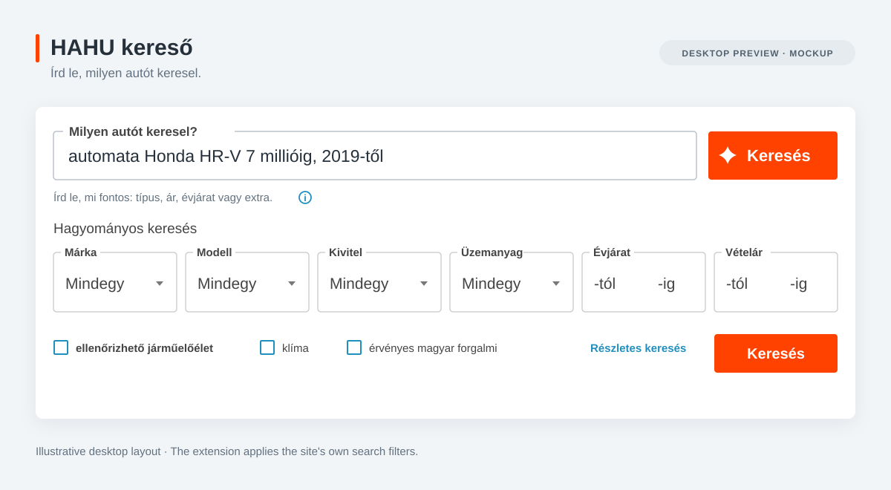

HAHU kereső — természetes nyelvű autókeresés


Írd le, milyen autót keresel. A bővítmény beállítja a szűrőket.
A HAHU kereső természetes nyelvű keresőmezőt ad a Használtautó.hu oldalához. A leírásodból az oldal saját keresési feltételeit állítja be, majd megnyitja a találatokat.
automata Honda HR-V 7 millióig, 2019-től
Egy mondatban megadhatod a márkát, a modellt, az árat, az évjáratot, a futásteljesítményt vagy a felszereltséget. Ékezetek nélkül is írhatsz. Ha egy feltételt nem sikerül beállítani, arról jelzés jelenik meg a találati oldalon. Fent a Használtautó mobilnézetének képernyőképe és egy szemléltető asztali előnézet látható.
Használat
A bővítmény használatához Chrome, működő backend és a fejlesztőtől kapott API-kulcs szükséges. A forráskódban található bővítmény helyi fejlesztői backendhez van beállítva; lásd a Helyi fejlesztés részt.
- Nyisd meg a
chrome://extensionsoldalt, kapcsold be a Fejlesztői módot, majd válaszd a Kicsomagolt bővítmény betöltése lehetőséget. Éles buildhez a beállítottdist/mappát válaszd. - Nyisd meg a Chrome bővítménymenüjéből a HAHU kereső panelt. Illeszd be az API-kulcsot, majd válaszd az Ellenőrzés és mentés gombot. A panelen a hátralévő keresések száma is látható.
- Nyisd meg vagy töltsd újra a Használtautó keresőoldalát, írd le, milyen autót keresel, majd kattints az új mező melletti Keresés gombra.
A keresés szövegét külső AI-szolgáltató dolgozza fel. Az AI tévedhet, ezért ellenőrizd a beállított szűrőket és a találatokat. Ha valamelyik feltételt nem sikerült beállítani, a találati oldalon erről is jelzés jelenik meg.
Éles build készítése
A buildhez Python 3.9 vagy újabb verzió szükséges; külső Python-csomag nem kell. A parancsot ebből a repóból futtasd, a backend pontos HTTPS-címét megadva:
BACKEND_ORIGIN='https://api.example.com' python3 build-extension.py distCseréld le a példacímet a telepített backend címére. Csak az origin adható meg: útvonal, query, felhasználónév/jelszó és fragment nélkül. A build ezt a címet rögzíti a bővítményben, és lecseréli a helyi backend engedélyét. A Chrome a telepítéskor kéri a szükséges hozzáférést; a backend címe nem jelenik meg a felületen. API-kulcsot vagy más hitelesítő adatot soha ne tegyél a buildbe.
A kimeneti dist/ mappa közvetlenül betölthető Chrome-ba. A build nem ír felül már létező kimeneti mappát. Chrome Web Store ZIP készítéséhez a dist/ tartalmát tömörítsd, hogy a manifest.json a ZIP gyökerébe kerüljön.
Helyi fejlesztés
A repó mappáját kicsomagolt bővítményként töltsd be. A forráskód kizárólag a http://127.0.0.1:8080 címet használja fejlesztéshez. A manifest pontosan ezt a loopback origint engedélyezi, a háttérfolyamat pedig elutasítja az ettől eltérő HTTP-címeket. Éles buildhez rögzített HTTPS-cím szükséges.
Ha a külön, privát backend repó a ../backend mappában van, állítsd be ott a .env fájlt PROVIDER_MODE=live értékkel és szolgáltatói API-kulccsal, majd indítsd el a Compose stacket a backend mappájából:
docker compose up --build -dÉles szolgáltatói ellenőrzéshez a normál Compose stacket használd; a compose.local.yaml mock providert kapcsol be. Add meg a bővítményhez a fejlesztőtől kapott API-kulcsot, majd változtatás után töltsd újra a bővítményt és a Használtautó oldalát.
Adatvédelem és API-kulcsok
- A bővítmény az API-kulcsot a
GET /v1/quotavégponton ellenőrzi, majd azAuthorizationfejlécben küldi el. A kulcs achrome.storage.localtárban marad meg, így a böngésző újraindítása után is elérhető. A böngészőprofilban ezért titkos adat van. - A kulcs bővítményből való eltávolítása csak az adott böngészőből törli azt. A szerveroldali visszavonást a fejlesztőtől kell kérni.
- Az értelmezési kérés (
POST /v1/interpret) csak a keresés szövegét, a módot és egy átláthatatlan kérésazonosítót küldi el. A keresés szövege az aktív oldal és kérés memóriájában marad; nem kerül URL-be vagy Chrome-tárhelyre. - A keresés átadásához a bővítmény a
POST /v1/plans/consumevégpontot használja. Az egyszer használatos token nem tartalmazza a keresés szövegét, és a felhasználása előtt eltávolítjuk az URL fragmentumából.
A repó tartalma
Ez a nyilvános repó a bővítmény felületét, a Használtautó űrlapadapterét és a backend API-kliensét tartalmazza. A bővítmény a Használtautó részletes keresési útvonalát használja. A quick-search-ui.js ebben a repóban van karbantartva; a build nem olvas másik webalkalmazásból.
A promptkezelés, a járművek egyeztetése, a katalógus-pillanatképek, a kvóták, a szolgáltatói hívások és a használati adatok tárolása a különálló privát backend repóhoz tartoznak. A backend forráskódja és a szolgáltatói hitelesítő adatok nem valók ebbe a repóba. A teljes API-szerződésért és az üzemeltetési parancsokért lásd a backend repó dokumentációját.
Licenc
Ehhez a repóhoz még nem tartozik LICENSE fájl. A nyilvános elérhetőség önmagában nem ad újrafelhasználási jogot; külső felhasználás vagy terjesztés előtt licencet kell választani és hozzáadni.